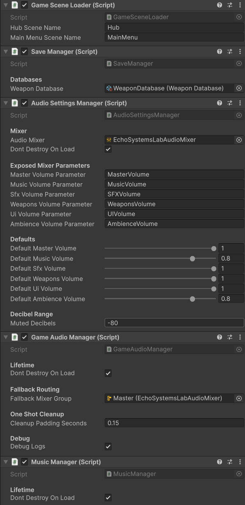
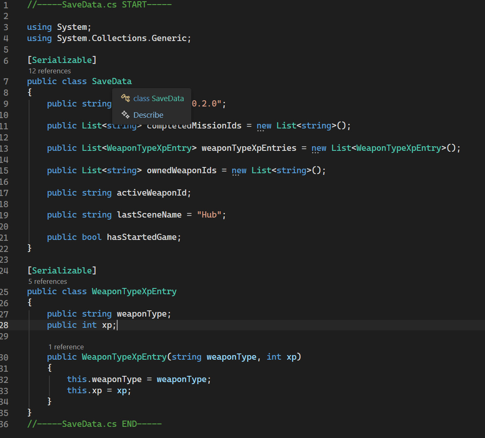

Persistent System Bootstrap
The SaveManager lives with other persistent services so save/load behavior survives scene changes.
- SaveManager
- Persistence
- Bootstrap
A persistent Unity progression system that tracks completed missions, owned weapons, active weapon selection, weapon type XP, last scene state, and unlock flow across the hub and trials.
Save progression gives Echo Systems Lab memory. Without it, the hub forgets every victory as soon as the scene changes.
The Save, Progression & Unlocks system stores the player’s meaningful progress across Echo Systems Lab. It tracks which missions have been completed, which weapons have been collected, which weapon is active, how much XP each weapon type has earned, and whether a valid save file exists.
This system allows the hub, mission terminal, weapon bandolier, target range trials, and main menu to all speak the same progression language. When the player completes a drill, the mission is marked complete, rewards are preserved, and future missions can unlock.
The goal is not just to save numbers. The goal is to make the whole project feel connected: actions inside a trial change what the player sees when they return to the hub.
Preserve player progress across scenes and sessions so mission completion, unlocks, weapons, and XP persist.
Complete mission → Mark progress → Save data → Return to hub → Unlock new options.
Demonstrates persistent data architecture, unlock logic, save/load flow, and cross-system state management.
Screenshot references for saved progress, mission unlocks, weapon ownership, and player-facing progression feedback.

The SaveManager lives with other persistent services so save/load behavior survives scene changes.

SaveData defines the durable facts that rebuild mission progress, weapon ownership, XP, and session state.

Completed mission IDs determine what the terminal shows as locked, available, or completed.

Unlocked weapons stay in the player collection, even when specific missions restrict active weapon selection.

Completing required range drills marks the full Target Range Trial complete and unlocks the next major trial.

The main menu can check for an existing save file and enable the Load Game button when progress exists.
The system turns mission completion into visible, persistent progress.
A new game clears or initializes progress data, then sends the player into the hub.
The mission terminal checks completed mission IDs to decide which missions are currently available.
A mission controller marks the mission complete after the player meets the required objective.
The player may gain mission completion, weapon ownership, active weapon updates, or weapon type XP.
Progress is written into SaveData so completed missions and weapon unlocks survive scene changes and reloads.
Returning to the terminal reflects the updated progress and reveals the next available mission.
The progression system is spread across clear responsibilities instead of one giant save cauldron.
Owns high-level save operations, including new game setup, loading existing data, saving current progress, checking whether a save exists, and exposing the weapon database.
Stores serialized progress such as completed mission IDs, owned weapon IDs, active weapon ID, weapon type XP entries, last scene name, and game-started state.
Provides runtime access to progress values, including completed mission checks, weapon ownership, active weapon ID, and weapon type XP totals.
Tracks completed mission IDs and provides simple availability checks for mission terminal UI.
Converts saved weapon IDs into usable WeaponData objects and returns owned weapons in database order.
Uses save file availability to enable or disable Load Game and route the player into a new or continued session.
The save file stores the long-term facts the rest of the game needs to remember.
The save data focuses on meaningful progression state. It does not need to save every temporary runtime detail. Instead, it saves the pieces that define where the player stands in the larger Systems Lab structure.
Completed mission IDs let the terminal unlock new trials. Owned weapon IDs let the bandolier rebuild the player’s collection. The active weapon ID restores the last selected weapon. Weapon type XP allows each weapon family to grow independently.
This keeps the save file compact and readable while still supporting a connected progression loop.
These dropdowns show the core save scripts behind the progression system. SaveManager handles file operations and runtime handoff, while SaveData defines the persistent state.
//-----SaveManager.cs START-----
using System;
using System.IO;
using UnityEngine;
public class SaveManager : MonoBehaviour
{
public event Action OnGameSaved;
public event Action OnGameLoaded;
public static SaveManager Instance { get; private set; }
private const string SaveFileName = "echo_systems_lab_save.json";
[Header("Databases")]
[SerializeField] private WeaponDatabase weaponDatabase;
private SaveData currentSaveData = new SaveData();
public SaveData CurrentSaveData => currentSaveData;
public WeaponDatabase WeaponDatabase => weaponDatabase;
private string SavePath => Path.Combine(Application.persistentDataPath, SaveFileName);
private void Awake()
{
if (Instance != null && Instance != this)
{
Destroy(gameObject);
return;
}
Instance = this;
DontDestroyOnLoad(gameObject);
LoadGame();
}
public void NewGame()
{
currentSaveData = new SaveData();
currentSaveData.hasStartedGame = true;
currentSaveData.lastSceneName = "Hub";
MissionProgress.LoadFromSaveData(currentSaveData);
PlayerProgress.LoadFromSaveData(currentSaveData);
SaveGame();
Debug.Log("New game created.");
}
public void SaveGame()
{
MissionProgress.WriteToSaveData(currentSaveData);
PlayerProgress.WriteToSaveData(currentSaveData);
string json = JsonUtility.ToJson(currentSaveData, true);
File.WriteAllText(SavePath, json);
Debug.Log($"Game saved to: {SavePath}");
OnGameSaved?.Invoke();
}
public bool LoadGame()
{
if (!File.Exists(SavePath))
{
currentSaveData = new SaveData();
MissionProgress.LoadFromSaveData(currentSaveData);
PlayerProgress.LoadFromSaveData(currentSaveData);
Debug.Log("No save file found. Created fresh save data in memory.");
OnGameLoaded?.Invoke();
return false;
}
string json = File.ReadAllText(SavePath);
currentSaveData = JsonUtility.FromJson<SaveData>(json);
if (currentSaveData == null)
currentSaveData = new SaveData();
MissionProgress.LoadFromSaveData(currentSaveData);
PlayerProgress.LoadFromSaveData(currentSaveData);
Debug.Log($"Game loaded from: {SavePath}");
OnGameLoaded?.Invoke();
return true;
}
public void DeleteSave()
{
if (File.Exists(SavePath))
File.Delete(SavePath);
currentSaveData = new SaveData();
MissionProgress.LoadFromSaveData(currentSaveData);
PlayerProgress.LoadFromSaveData(currentSaveData);
Debug.Log("Save file deleted.");
}
public bool HasSaveFile()
{
return File.Exists(SavePath);
}
}
//-----SaveManager.cs END-----//-----SaveData.cs START-----
using System;
using System.Collections.Generic;
[Serializable]
public class SaveData
{
public string saveVersion = "0.2.0";
public List<string> completedMissionIds = new List<string>();
public List<WeaponTypeXpEntry> weaponTypeXpEntries = new List<WeaponTypeXpEntry>();
public List<string> ownedWeaponIds = new List<string>();
public string activeWeaponId;
public string lastSceneName = "Hub";
public bool hasStartedGame;
}
[Serializable]
public class WeaponTypeXpEntry
{
public string weaponType;
public int xp;
public WeaponTypeXpEntry(string weaponType, int xp)
{
this.weaponType = weaponType;
this.xp = xp;
}
}
//-----SaveData.cs END-----Unlocks are driven by saved IDs, which keeps mission chains readable and expandable.
When a drill completes, its mission ID is added to completed progress and saved.
A mission can require one or more completed mission IDs before the terminal allows it to start.
Weapon rewards add owned weapon IDs to the player collection without forcing every mission to allow every weapon.
Drills can equip a temporary weapon while still preserving the player’s broader unlocked collection.
Hits, target destruction, and weapon use can award weapon type XP that persists through the save file.
The Load Game button reflects whether a valid save file exists, making persistence visible before gameplay starts.
Persistence became necessary as soon as the project stopped being a test scene and started becoming a connected game framework.
The first version of the target range could run as a contained scene, but the project needed progress to survive after returning to the hub. Completing a mission had to mean something outside the current moment.
The weapon collection also needed a subtle distinction. Unlocking a weapon should add it to the player’s collection, but target range drills should still be able to restrict the active weapon so each challenge remains fair.
By separating saved ownership from mission permission, the system supports both player progression and carefully designed challenge rules.
Progress survives scene changes instead of resetting every time the player returns to the hub.
Missions unlock through completed mission IDs, keeping requirements clear and data-driven.
Owned weapons persist, while specific drills can still control which weapon is allowed.
This system shows how gameplay features become stronger when backed by persistent architecture.
The Save, Progression & Unlocks system demonstrates Unity C# architecture that connects player action to long-term state. It supports mission unlocks, weapon rewards, active loadouts, XP tracking, and menu state.
This is important because many gameplay systems become fragile when progression is added later. Building save and unlock flow early keeps the project scalable.
For portfolio purposes, this shows that I am not only building isolated mechanics. I am building the connective tissue that turns mechanics into a playable framework.
Save progression connects directly to mission selection, weapon ownership, target range completion, and HUD feedback.
Covers mission selection, unlock requirements, dynamic UI generation, and hub-to-trial routing.
Covers owned weapon collections, active weapon selection, temporary mission weapons, ammo data, and loadout rules.
Covers mission completion, trial completion, scoring, accuracy, and return-to-hub flow.